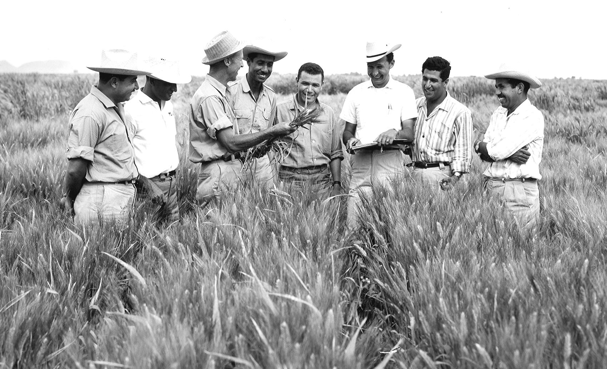

Dr.Norman Borloug
the man who saved a bilion lives

dr.norman botlaug,third from the left bologists in mexico on how to increase wheat yelds-part of this life long war on hunger
Her's a time line of Dr.Borlaug's life: